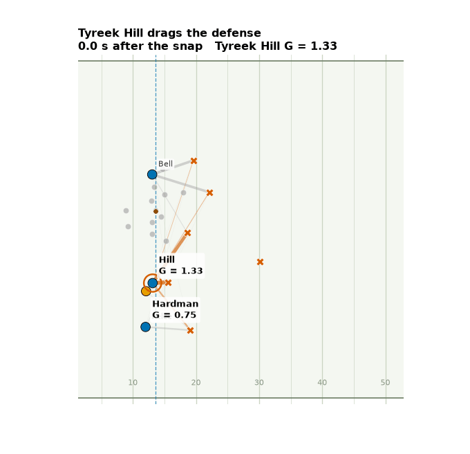
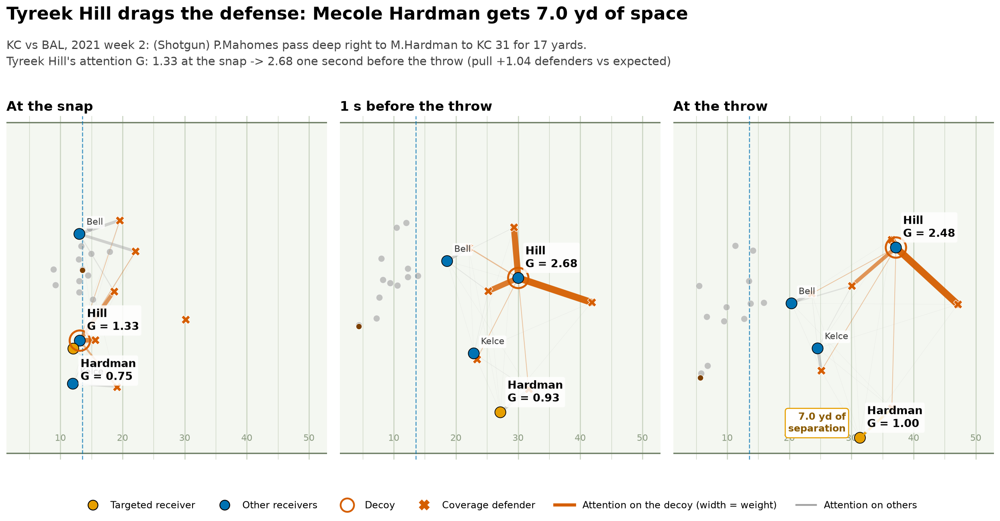
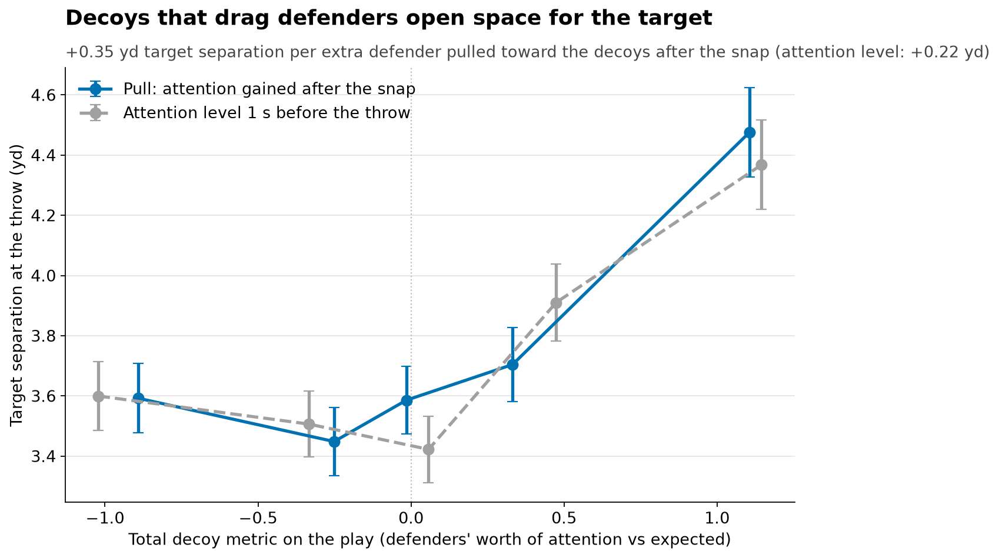
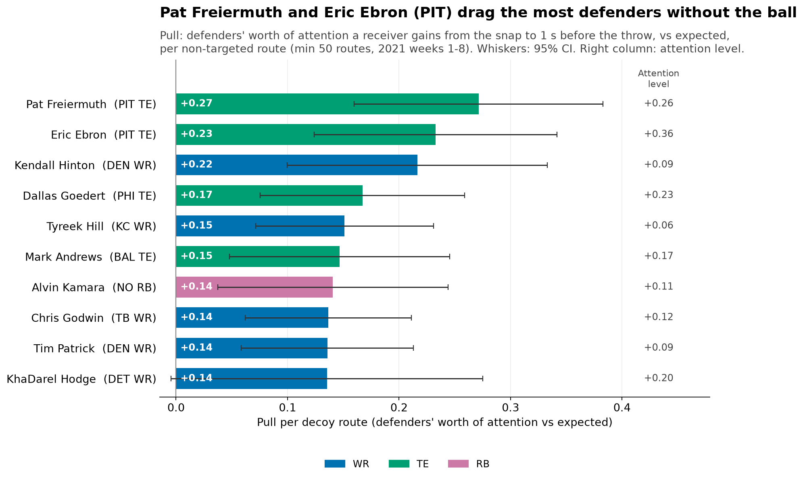
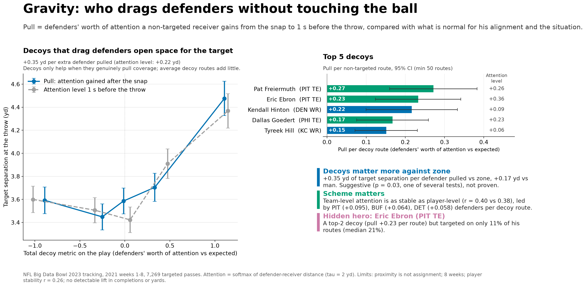

One play


What we measure
Every defender in coverage splits his focus between the receivers around him, most of it on the closest one.
Pull is how many defenders' worth of focus a receiver who is not thrown to draws toward himself after the snap, compared with what's normal for where he lined up and the game situation.
We measure it 1 second before the throw, so we don't count defenders who are only there because the ball is coming.
What we found
more separation for the receiver who gets the ball, for every extra defender the decoys pull.

About twice the effect against zone as against man: +0.35 yd per extra defender pulled against zone, +0.17 yd against man. Suggestive, not proven (p = 0.03, one of several tests).
Scheme matters: team-wide decoy patterns hold up from week to week at least as well as individual players' do, and Pittsburgh leads the league.
Top decoys

- Pat Freiermuth (PIT TE)
- Eric Ebron (PIT TE)
- Kendall Hinton (DEN WR)
- Dallas Goedert (PHI TE)
- Tyreek Hill (KC WR)
Hidden hero: Eric Ebron (PIT TE). A top-2 decoy, but targeted on only 11% of his routes.
Top 5 teams by decoy attention
| Rank | Offense | Extra attention per decoy route | Decoy routes |
|---|---|---|---|
| 1 | PIT Steelers | +0.095 | 820 |
| 2 | BUF Bills | +0.064 | 802 |
| 3 | DET Lions | +0.058 | 1,069 |
| 4 | DEN Broncos | +0.056 | 921 |
| 5 | MIA Dolphins | +0.055 | 939 |
How to read it: how many extra defenders' worth of attention a team's decoys hold on an average route, compared with normal, 1 second before the throw. Higher = the offense's scheme pulls more coverage away from the target.
Coach takeaways
- Scheme your best puller as the decoy to open the primary read.
- Lean on it against zone, where pulled defenders open the most space.
- A decoy only helps when he really moves a defender, so sell the route, and don't judge receivers by targets alone.
Limits
8 weeks of data; a defender being near a receiver isn't the same as covering him; rankings are only moderately stable week to week (r = 0.26); no detectable lift in completions or yards yet.
Everything on one page
